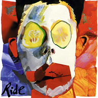
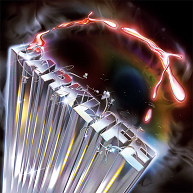
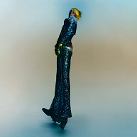
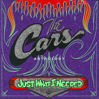
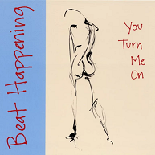
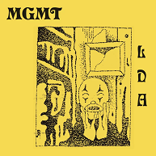
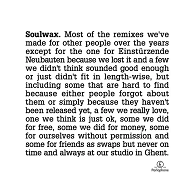
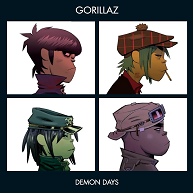

What I'm Listening To
Albums I've been playing on repeat lately

Going Blank Again
Ride
French Exit
TV Girl

Darklife
death's dynamic shroud

...Hot Between Worlds
Yves Tumor

Just What I Needed
The Cars

You Turn Me On
Beat Happening

Little Dark Age
MGMT

Most of the remixes...
Soulwax

Demon Days
Gorillaz
No Passion All Technique
Protomartyr